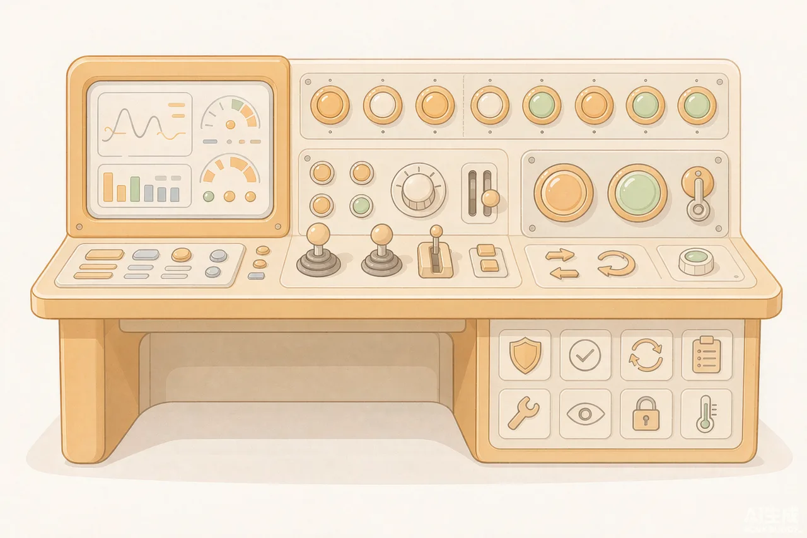

感知与界面设计
研究视觉与听觉信息呈现方式对觉察和辨识的影响，探讨编码、布局与反馈如何降低误读与遗漏。常见问题是颜色编码只依赖红绿差异，对色觉障碍者不友好；清晰的分组与即时反馈能减少误判。
应用心理学 · DISCIPLINE
Engineering Psychology
优化人—机—环境系统的匹配与安全
工程心理学（人因学）研究人与技术系统交互中的心理与行为规律，关注感知、注意、记忆、决策与动作控制在复杂系统中的表现，并据以优化界面、工具与工作流程设计。它重视人的能力限制与负荷，研究人为差错、情境意识与自动化带来的问题，广泛应用于航空、医疗、交通与工业系统。例如，当控制界面上警报数量过多且优先级不清时，操作人员可能漏看关键信息，这类问题通常需要通过信息分层与反馈设计来改善。该领域以实验与系统评估为主要依据，目标在于提升安全、效率与可用性。其价值在于把人的特点纳入系统设计，减少本可避免的失误。

这个分支主要研究什么
研究视觉与听觉信息呈现方式对觉察和辨识的影响，探讨编码、布局与反馈如何降低误读与遗漏。常见问题是颜色编码只依赖红绿差异，对色觉障碍者不友好；清晰的分组与即时反馈能减少误判。
分析任务复杂度与时间压力对认知资源的需求，关注负荷过载与不足对警觉性和决策质量的影响。监测可结合主观量表与绩效指标；负荷过低同样危险，因为长时间单调监控会导致警觉下降。
从系统视角分析差错发生的情境与组织因素，强调通过设计和管理降低失误概率及后果。分析不只追问谁做错了，还检查界面相似性、时间压力、交接流程与培训是否制造了出错条件。
探讨自动化对情境意识、信任校准与技能保持的影响，研究人与智能系统之间的职责分配。典型现象是过度依赖辅助系统导致技能退化，或在系统误报后产生不信任而忽略正确提示。
结合任务绩效、主观评价与观察数据评估系统易用性，识别设计缺陷并提出可验证的改进方向。评估通常让典型用户完成真实任务，记录错误次数、完成时间与困惑点，再按优先级修订设计。
这一分支能带来什么
学习工程心理学能让你理解人为差错往往有设计和组织根源，而不是简单归咎于个人疏忽。你会更懂得审视界面、流程与反馈，提升对安全与可用性的判断力，也能在日常使用中识别设计缺陷。
一项奠定了这个领域的研究
1979年美国三里岛核电站发生严重事件，后续调查把注意力扩展到人因层面：控制室信息量大、警报密集且优先级不清，仪表显示方式使操作人员难以判断真实状态，维修与沟通流程也存在缺陷。调查推动业界重新审视界面布局、警报管理与培训方式，强调不能把差错简单归咎于个人。该事件成为人因工程与安全文化的重要案例，影响了后续过程工业的控制室设计与操作规范。
还没定论的问题，往往最值得追问
自动化降低日常负担，却可能让操作者在系统失效时缺乏应对能力。争论集中在多大程度保留人工操作、如何设计让操作者维持情境意识的界面，以及培训应侧重监控还是手动技能。
警报过多会导致重要信号被忽略，但重新设计涉及成本与流程改造。争论围绕如何确定警报优先级、采用何种提示方式更有效，以及改进效果如何在真实运行中验证而非止于实验室。
把概念带回日常观察
选一个常用应用或遥控器，给自己一个具体任务，比如找到某项设置，记录花了多久、走错几次、哪里犹豫。再想想如果重新排列会怎样，只描述体验，不评判自己。仅作自我观察，不构成诊断或治疗建议。
怎么研究，用在哪里
进入这个分支的术语入口
与这一领域密切相关的名字
提出菲茨定律，定量描述指向运动时间与目标距离、大小的关系。
倡导以用户为中心的设计，阐明可供性与反馈在交互中的作用。